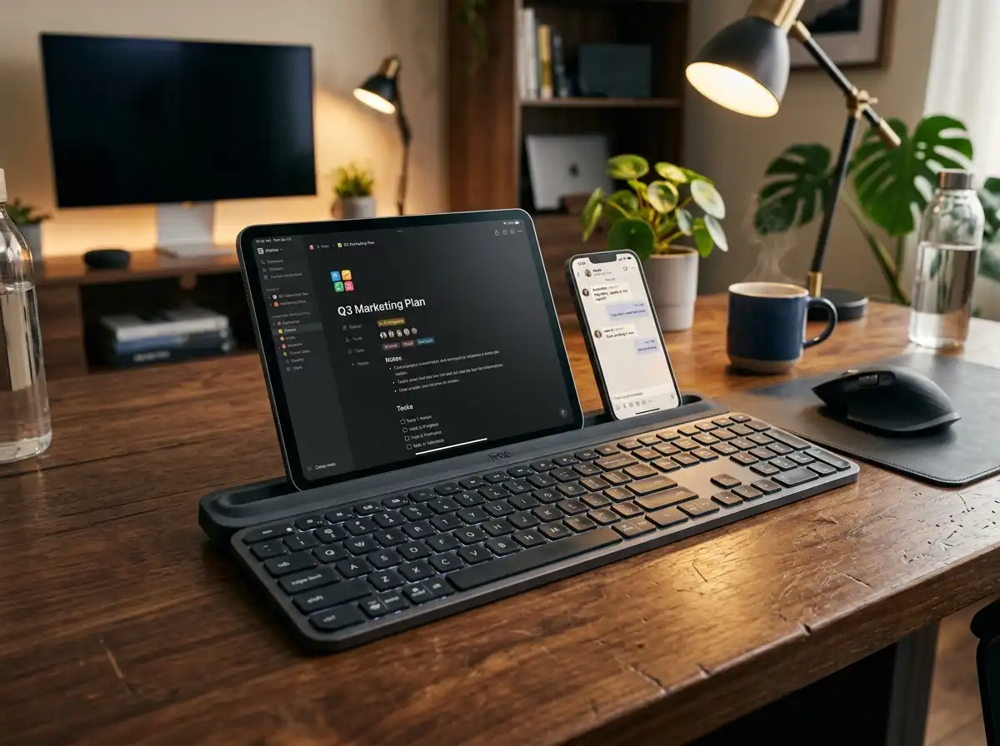

Best Wireless Keyboards with Built-In Device Stands for Tablets and Phones
Managing a modern workflow often means bouncing between a primary computer monitor, a tablet displaying reference material, and a smartphone flashing real-time communication alerts. Attempting to type notes or reply to threads directly on glass touchscreens creates an absolute operational bottleneck. Wireless keyboards with built-in device stands solve this issue by introducing dedicated, weighted cradles that physically hold your mobile hardware at the perfect viewing angle. These productivity hubs turn isolated devices into a cohesive, multi-screen command center. We rigorously tested the top-performing models on the market to evaluate dock stability, device switching speeds, and overall desk footprint so you can choose the ideal cradle deck for your active workspace.
Top Picks at a Glance
- The Heavyweight Masterpiece: Logitech K780 Multi-Device
- The Tactile Budget Dial: Logitech K480 Wireless Multi-Device
- The Ultra-Light Traveler: Macally Bluetooth Keyboard for Tablet
- The Ultra-Thin Full-Size Fusion: Arteck Universal Bluetooth Keyboard with Cradle
1. The Heavyweight Masterpiece: Logitech K780 Multi-Device
The Logitech K780 is an elite, full-sized productivity machine engineered for power users who demand zero compromise. Its hallmark feature is a deep, rubberized, speckle-finished cradle groove that spans the entire length of the keyboard frame. Because the base is internally weighted, it provides massive structural equilibrium, allowing you to mount an expansive 12.9-inch iPad Pro alongside a flagship smartphone simultaneously without the board tipping backward. Operating over a hybrid setup of Bluetooth and an included USB Unifying Receiver, the K780 lets you toggle typing between three distinct devices instantly via dedicated Easy-Switch keys. The whisper-quiet round keys and integrated numeric pad deliver a high-speed, tactile desktop layout.
Flawless heavy tablet balance. Zero flex. Excellent data entry speed.
Hardware Spec Analytics

Logitech K780 Multi-Device
- ✅ Pros: Holds large, heavy professional tablets securely; full-size layout includes dedicated 10-key numpad; silent keys are perfect for office zones.
- ❌ Cons: Weighted desktop chassis is bulky and not designed for portable travel bags.
2. The Tactile Budget Dial: Logitech K480 Wireless Multi-Device
For users seeking reliable multi-device control under a modest budget, the Logitech K480 is an absolute workspace classic. It replaces soft buttons with a highly tactile, physical yellow Easy-Switch dial on the upper left corner, allowing you to mechanically click between three paired Bluetooth channels. The built-in cradle is precisely angled and coated to hold tablets up to 10 inches wide and 0.4 inches thick safely. Its compact, space-saving footprint brings your mouse closer to your body's center line for improved ergonomic posture. Running on two pre-installed AAA batteries that stretch up to 24 months of lifespan, it features a highly durable, spill-resistant shell built to survive accidental desk messes.
Physical dial selector is incredibly intuitive. High accidental spill protection.
Hardware Spec Analytics


Swipe horizontally to view angles
Logitech K480 Wireless Multi-Device Keyboard
- ✅ Pros: Highly affordable entry point; tactile physical switching dial prevents channel confusion; rugged, highly reliable construction.
- ❌ Cons: Deep, hollow key travel generates noticeable typing click noise in quiet rooms.
3. The Ultra-Light Traveler: Macally Bluetooth Keyboard for Tablet
When your mobile office constantly transitions from college lecture halls to busy coffee shops, the Macally Bluetooth Keyboard provides a remarkably slim travel solution. Stripping away unnecessary frame bulk, this 78-key compact workspace saver neatly integrates a 10.5-inch device slot directly into its top border. The internal 280 mAh lithium cell is fully rechargeable via an included cable, freeing you from carrying spare batteries. Running on Multi-Sync Bluetooth protocols, it pairs with up to three devices at once. It also incorporates 13 dedicated multimedia hotkeys to give you rapid, one-press mastery over volume adjustments, media streaming tabs, and system navigation across phone or tablet displays.
Ultra-light design drops right into backpacks. Completely rechargeable.
Hardware Spec Analytics


Swipe horizontally to view angles
Macally Bluetooth Keyboard for Tablet
- ✅ Pros: Featherlight footprint ideal for traveling digital nomads; convenient rechargeable layout; space-saving structural format.
- ❌ Cons: The 10.5-inch slot cannot host larger pro tablets or models horizontally.
4. The Ultra-Thin Full-Size Fusion: Arteck Universal Bluetooth Keyboard with Cradle
The Arteck Universal Keyboard masterfully merges an ultra-slim 0.2-inch profile with the data-entry speed of a full-sized layout. Featuring premium low-profile round keys mounted over an advanced scissor-switch mechanism, it offers quick tactile feedback with minimal sound output. The functional built-in cradle is structurally designed to support cellphones or tablets firmly without flexing, even during fast, heavy typing strokes. It offers expansive cross-platform driver compatibility across Windows, iOS, Mac, and Android ecosystems, switching between three live connections with a single click. A high-capacity rechargeable battery block ensures up to 6 months of use out of a single charging cycle.
High-end scissor-switch response. Massive 6-month charge cycle.
Hardware Spec Analytics


Swipe horizontally to view angles
Arteck Universal Bluetooth Keyboard with Cradle
- ✅ Pros: Ultra-slim modern profile looks premium; full-size keyboard layout including a standard numeric pad; lengthy battery performance metrics.
- ❌ Cons: Massive 14.6-inch total horizontal length requires significant physical desk real estate.
The Final Verdict: Which Stand Fits Your Desk?
Get the Logitech K780 if:
- You operate at a permanent, stationary home office desk and use heavy pro gear like a 12.9-inch iPad Pro or Surface tablet that demands absolute maximum cradle mass and tip resistance.
Get the Logitech K480 if:
- You are on a strict budget, want an incredibly simple mechanical switching dial, and need a durable, spill-resistant board for home use.
Get the Macally Keyboard if:
- You are an on-the-go student or travel writer who wants a compact, rechargeable, featherlight layout that fits inside small computer sleeves.
Get the Arteck Universal if:
- You want a sleek, ultra-thin aesthetic but refuse to give up your numeric keypad for data entry, programming, or accounting tasks.
Frequently Asked Questions
Will these built-in stands securely hold a large 12.9-inch iPad Pro without tipping backward?
Heavy-duty, premium-weight models like the Logitech K780 feature internally weighted bases and thick rubberized cradles specifically balanced to support oversized tablets. Lighter, highly portable models like the Macally are optimized for smaller tablets (11 inches or under) and standard smartphones to prevent balance imbalances.
Can I leave a thick protective case (like an OtterBox) on my tablet or phone when using the cradle slot?
Most built-in keyboard slots are engineered for bare devices, slim silicone skins, or folio smart covers. If your phone or tablet is wrapped inside a thick, rugged defensive case, it will likely exceed the standard 0.4-inch groove width and won't sit inside the stand properly.
Do these keyboards require an external USB receiver, or do they connect natively via Bluetooth?
The Logitech K480, Macally, and Arteck rely on native Bluetooth chips, allowing them to pair directly with your device's internal antenna without taking up ports. The Logitech K780 features dual connectivity, packing both direct Bluetooth and a USB Unifying Receiver for older desktop towers lacking Bluetooth hardware.
Karim
Wireless desk enthusiast and mechanical keyboard obsessive. I test, review, and tear down tech to help you build the perfect, clutter-free setup.